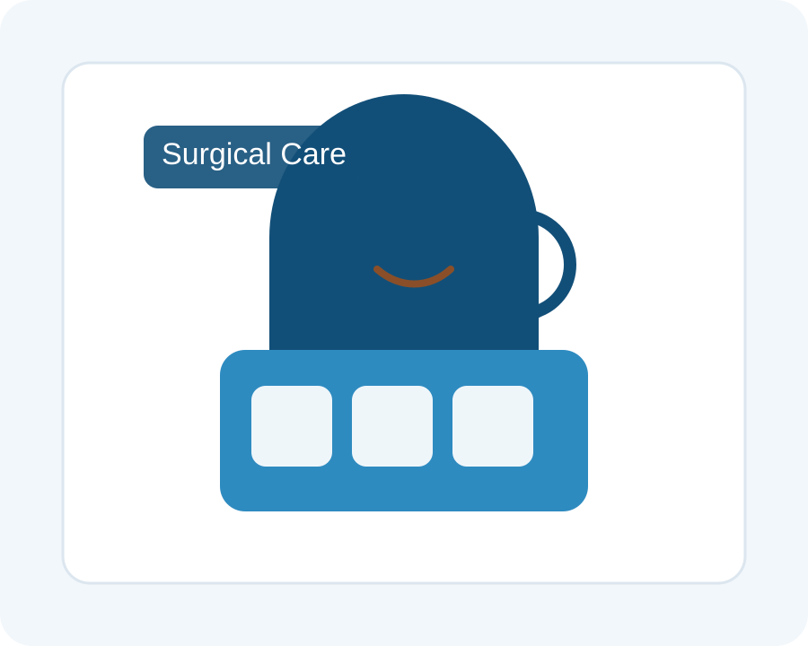

Лапароскопічна хірургія
Холецистектомія, резекції, герніопластика та інші малоінвазивні втручання.
Хірург • Онколог • Вчений • Викладач
Професор Сергій Сушков поєднує багаторічний клінічний досвід і сучасні малоінвазивні методики, щоб допомагати пацієнтам з онкологією, абдомінальними захворюваннями та невідкладними хірургічними станами.

Холецистектомія, резекції, герніопластика та інші малоінвазивні втручання.
Планування лікування, органозберігаючі операції та комплексний підхід до онкологічних пацієнтів.
Оперативна допомога при перфорації, перитоніті, гострому панкреатиті та інших невідкладних станах.
Понад 40 років клінічної практики, 121 публікація, 18 патентів, 20+ років досвіду GCP і навчання понад 200 хірургів.
Для складних або невідкладних випадків коротко опишіть стан і додайте наявні результати обстежень.
«Зрозумілі пояснення, спокійний підхід і продуманий план лікування».— Нещодавній відгук
«Сильний акцент на безпеці, комунікації та сучасних методах лікування».— Нещодавній професійний відгук
Так. Онкохірургія — одна з ключових сфер практики, включаючи органозберігаючі стратегії та мультидисциплінарне планування.
Так. Малоінвазивні підходи застосовуються, коли це доречно для клінічної ситуації.
Можна зв'язатися по email або Telegram і коротко описати проблему та наявні медичні дані.